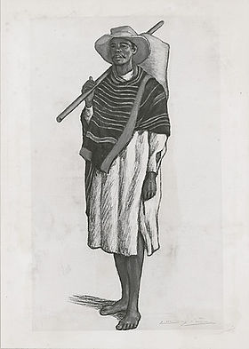

Betsileos
| Betsileo | |
|  Betsileo, dessin au crayon de Lucien Lièvre, artiste français, né en 1878. |
|
| Populations | |
|---|---|
| Populations significatives par régions | |
| 2 292 000 | |
| Autre | |
| Religion(s) | christianisme, religions traditionnelles |
| modifier |
|
{kind=link}
Betsileo ou "betsilao" est la dénomination générique des populations occupant la partie sud des terres centrales de Madagascar.
Le territoire traditionnel betsileo s'étendait depuis la rivière Mania au nord jusqu'au pied du Massif d'Andringitra au sud. Vers l'ouest, celui-ci est limité par la chaîne du Bongolava et vers l'est par la forêt orientale occupée par les Tanala.
Le nom de "Betsilao" (ou "Betsileo") signifie littéralement "les nombreux invincibles".
Sommaire[masquer] |
Histoire[modifier]
Dès le début du XVIIIème siècle, les Betsileo s'étaient armés pour se défendre contre les Sakalava, formant même la première armée permanente de l'île de Madagascar.
En ce qui concerne le nom même de Betsileo, d'après Grandidier, "Le vrai nom des Betsileo était autrefois et est même encore aujourd'hui "Andriambohitsombilahy" [lit: les seigneurs des montagnes (riches) en bétail] ou plus couramment Ambihitsomby. Ils se sont attribué le nom de Betsileo, qui signifie "les invincibles", après la tentative infructueuse que Ramitraha, le roi des Sakalava du Menabe, fit vers 1815 pour conquérir le pays" (Histoire physique, naturelle et politique de Madagascar, t.I, Histoire de la Géographie, 1885, note I, p.183).
Le temps de la guerre des nouveaux arrivants dans le pays Betsileo contre les Vazimba, habitants les plus anciens de l'île, remonte au XIIIè Siècle. Des explorateurs Européens comme Souchu de Rennefort ou François martin ayant déjà relevé l'appellation "Betsilao" au XVIIè Siècle, celle-ci aurait donc été utilisée par les Vazimba pour décrire leurs envahisseurs, et fut définitivement adoptée par les Betsileo suite aux succès face aux attaques infructueuses des Sakalava dès le début du XVIIIème siècle.
L'émigration d'Arabisés (Iarivo) au Sud-est dans le Betsileo vers 1475 met définitivement un terme au temps des Vazimba, qui se déplacent vers l'ouest. L'Iarivo, sur le futur territoire du Lalangina, est le pays des ancêtres de Ralambovitaony, qui va fonder le royaume d'Isandra, pièce centrale du monde betsileo du XVIIIe siècle au milieu des principautés dirigées par les descendants de Ravelonandro, une princesse venue du pays Antemoro.
{kind=link}
Dans sa "Monographie des Betsileo"[1], le père Dubois établit que les nobles immigrants se seraient alliés avec les nobles Vazimba, et auraient chassé le reste de la population indigène vers l'Ouest. Ainsi, un métissage aurait eu lieu entre les nobles immigrants et les nobles Vazimba, formant l'ethnie des Betsileo actuelle dont les nobles présentent un caractère africain prononcé, comparé au reste de la population. Les Vazimba ont légué au royaume d'Iarivo et, par son intermédiaire, au royaume d'Isandra, non seulement leurs dieux ou ancêtres divinisés, mais aussi l'ensemble de leurs pratiques politico-religieuses. Cela est vrai des différents rituels du culte des ancêtres, du traitement et du devenir de la dépouille mortelle des rois pour leur réincarnation en "fañany", tout autant que des rites de fondation qui demandaient des sacrifices humains. L'apport des princes vazimba aux royautés ultérieures apparaît dès lors d'une importance considérable.
Les traditions rapportent que les souverains des différents royaumes Betsileo étaient au départ issus de la même lignée, celle des rois du Manandriana, le royaume du nord occupant l'actuelle région d'Ambositra. Ce royaume du Manandriana s'est constitué vers le XVIe siècle et avait pour premier grand souverain Andriantara Ier. Les autres royaumes qui apparurent par la suite et qui existèrent indépendamment les uns des autres sont :
- l'Isandra dans le sud-ouest qui atteignit son apogée dans la seconde moitié du XVIIIe siècle sous Andriamanalina 1er;
- le Lalangina fondé par le roi Rahasamanarivo, situé dans le sud-est, région de l'actuelle Fianarantsoa dénommée ainsi suite à une période de conquête Merina sous Radama I;
- l'Arindrano dans le sud (région actuelle d'Ambalavao) qui ensuite se scinda lui-même en deux pour donner naissance au royaume plus méridional du Vohibato.
Leur histoire montre qu'au cours des derniers siècles, les populations betsileo étaient en constante expansion, d'abord vers le sud et l'ouest et ensuite vers le nord en pays merina où ils représentent de nos jours d'importantes minorités. Les Betsileo constituent le troisième groupe le plus important en nombre à Madagascar.
Civilisation[modifier]
{kind=link}
Les Betsileo revendiquent un patrimoine commun avec les Antemoro de la côte Est, les Tanala et les Bara du sud. Ils sont connus pour leur élevage de bétail, leur base agricole et les prouesses de leurs fermiers. La culture du riz, aliment de base à Madagascar, occupe une grande place dans leur activité économique. La taille et le rendement de la parcelle de riz d'une famille ainsi que le nombre de bétail qu'elle possède délimite souvent la richesse de cette famille. Le pays Betsileo est caractérisé par des collines et des vallées sur les flancs desquelles sont sculptées des rizières par un système élaboré de terrasses, dans un style qui rappelle ceux de l'Asie du Sud Est, montrant ainsi un héritage transmis par certains de leurs ancêtres originaires de cette région d'Asie. Le régime alimentaire Betsileo est presque toujours composé de riz accompagné de viande d'animaux issus de l'élevage tels que le bœuf, le poulet, le canard ou les poissons issus de la pisciculture ou de la pêche en rivière ainsi que d'aliments issus des cultures secondaires comme le manioc, les haricots et d'autres légumes.
{kind=link}
Par l'héritage de leur civilisation traditionnelle, les Betsileo sont d'excellents travailleurs du bois, particulièrement connus pour leurs grandes sculptures artistiques. Les Zafimaniry en particulier, un sous-groupe du Betsileo, ont su maintenir vivante cette tradition et sont considérés comme les derniers dépositaires du savoir traditionnel Betsileo concernant l'architecture à base de bois et des arts décoratifs. La connaissance du bois des Betsileo Zafimaniry a été classée par l'UNESCO en tant que patrimoine culturel immatériel de l'humanité en 2002.
La hiérarchie sociale Betsileo était divisée en quatre classes:
- Les Hova (nobles): la lignée royale, à laquelle tous les zébus, les "aomby" (provenant du mot bantou "gnombé") ainsi que les terres appartenaient. Tout achat, ou mise à mort d'un aomby requérait la présence d'un Hova. Les hécatombes de bétail en centaines qui célébraient autrefois la mort d'un roi ou de riches Betsileo ne se produisent plus aujourd'hui, car ils ont pris fin suite à leur interdiction lors de la colonisation Française à Madagascar[2].
- Les Andevohova : esclaves considérés comme des hommes libres, car bénéficiant du statut "d'être au service" des Hova. Les bras droits des Hova étaient les Andriambaventy. Les nourricières des enfants Hova, les Raindraoto, et les Ramanga, employés pour boire le sang du Hova blessé, recueillir ses rognures d'ongle, lui couper sa viande etc.
- Les Olom-potsy (olona fotsy): caste de la société Betsileo, qui caractérise les simples sujets, que rien ne vient distinguer. Le pays Betsileo serait composé de 78 clans d'Olom-potsy. L'appartenance à un clan se transmet par filiation et détermine les lois du mariage qui n'ont lieu qu'entre familles du même clan. Chaque clan est soumis à ses propres interdictions ou "fady", et a ses règles.
- Les Andevo : les esclaves, vaincus des guerres. L'esclave était à l'entière disposition mais aucun acte de cruauté n'était pratiqué à son encontre, il faisait partie de la maison, et on le laissait avec sa femme et ses enfants.
Les Sihanaka de la partie nord-est des hautes terres et les Merina avaient un type d'hiérarchie sociale se rapprochant de celui des Betsileo. Cependant, les différences restent importantes et les membres des différents groupes tiennent toujours à bien marquer leur identité respective sur ce plan et sur d'autres. La langue Betsileo se rapproche tout aussi bien des parlers du Sud de Madagascar que de ceux des hautes terres centrales.
Un des aspects les plus emblématiques des Betsileo est le sport pratiqué par leurs jeunes. Afin de tester leur force, montrer leur bravoure, s'aguerrir ou pour séduire les femmes, les jeunes Betsileo affrontent les taureaux triés en fonction de leur agressivité, à mains nues dans des arènes remplies d'une foule en ivresse. Ce sport ancestral appelé le "savika", ou "toloñ'omby" est une des multiples facettes illustrant la place prédominante qu'occupe le zébu dans la civilisation Betsileo. C'est entre autres un symbole de puissance, de richesse et de royauté.
Religion[modifier]
Depuis l'arrivée des missionnaires européens au XIXe siècle, une grande partie de la population malgache s'est convertie au christianisme.
{kind=link}
Aujourd'hui, la plupart des Betsileo sont protestants ou catholiques, mais une grande partie de leurs traditions ancestrales et principes religieux sont toujours observés, souvent aux côtés ou de concert avec les pratiques chrétiennes. La croyance pré-chrétienne Betsileo est monothéiste, reconnaissent un Dieu créateur nommé Zanahary. Un royaume surnaturel des esprits des ancêtres, les fantômes ainsi que des esprits de la nature sont également reconnus, et sont toujours invoquée à des fins rituelles. Les influences contradictoires du monothéisme européen et de la religion Malgache ont abouti à un système unique de coutumes religieuses dans lesquelles les pratiques Chrétiennes et les principes traditionnels ont été combinés dans les cérémonies et les croyances.
Aujourd'hui, l'une des plus importantes cérémonies Betsileo est le famadihana ou "retournement des morts", au cours de laquelle les restes des ancêtres Bestileo sont sortis de leurs tombes, enveloppés dans des draps neufs et célébrés[3]. Malgré la prévalence du christianisme, le rôle des "ombiasy" (sorte de chaman) qui sont des devins, des astrologues et des sorciers dans la société betsileo est aussi toujours important. Les ombiasy sont supposés être en mesure de manipuler la magie ainsi que de converser avec les ancêtres, et peuvent être consultés pour des raisons allant des problèmes de santé à l'empoisonnement ou encore pour la géomancie, l'agriculture, etc. L'ombiasy peut faire le bien comme le mal, et c'est ce qui le distingue du sorcier qui lui, ne fait que le mal. C'est lui qui décide de la date propice d'une fête comme le famadihana, d'après la position des étoiles et du calendrier lunaire. Il est très respecté des habitants, car il détient des savoirs qu'il est le seul à maîtriser et qui peuvent être néfastes si jamais il les utilise pour jeter un sort.
Notes[modifier]
Voir aussi[modifier]
Articles connexes[modifier]
Bibliographie[modifier]
- (en) Sandra Johanna Theodora Maria Evers, Constructing history, culture and inequality : the Betsileo in the extreme southern highlands of Madagascar, Brill, Leyde, Boston, Cologne, 2002, 241 p. (ISBN 90-04-12460-8)
- (en) Mariette Razivelo, The doctrine of the holy spirit in the Betsileo context : implications of the Betsileo understanding of "spirit", "human spirit" and "spirits" for the christian understanding of the holy spirit, Luther Seminary, Université de St. Paul (MN), 1994, 254 p.
- (fr) [1] Henri-Marie Dubois, Monographie des Betsileo (Madagascar), Institut d'ethnologie, Paris, 1938, 1 510 p.
- (fr) Noël Jacques Gueunier, Les monuments funéraires et commémoratifs de bois sculpté betsileo (Madagascar), Centre universitaire régional, Tuléar (Madagascar), 1977, 790 p. (texte remanié d'une thèse soutenue à l'Université de Paris 1 en 1974)
- (fr) Sophie Moreau, Les gens de la lisière : la forêt, l'arbre et la construction d'une civilisation paysanne : Sud Betsileo, Madagascar, Université de Paris 10, 2002, 667 p. (thèse)
- (fr) Adolphe Rahamefy, Le roi ne meurt pas : rites funéraires princiers du Betsiléo, Madagascar, L'Harmattan, 1997, 236 p. (ISBN 2-7384-5556-5)
- (fr) Roland Rakotovao, Anarandray et Tanindrazana à Madagascar : l'identité des migrants Betsileo en Imerina pendant la période coloniale (1895-1960), Université de Paris 7, 2008, 382 p. (thèse)
- (fr) Ernest Ratsimbazafy, Deux pratiques traditionnelles de combat à Madagascar : Savika du Betsiléo et Moraingy du Menabe : significations historiques, sociales et culturelles, Université de La Réunion, 2006, 530 p.
- (en) Covell: Madagascar, Politics, Economics and Society. London: Frances Pinter, 1987. Page 12.
- (en) [3] Brandt, Hilary. (2007). Death special: turning the dead. New Scientist, Retrieved from http://www.newscientist.com/article/mg19626252.100-death-special-turning-the-dead.html
- (en) Evers, Sandra, J.T.M. (2002). Constructing history, culture and inequality. Boston: Brill.
- (en) Shore, Cris, & Nugent, Stephen. (Ed.). (2002). Elite cultures. New York, NY: Routledge.
- (fr) [2] M.Sallé: Les Funérailles chez les Betsiléos, Bulletins et Mémoires de la Société d'anthropologie de Paris, Volume 8, 1907. P.165-167.
Discographie[modifier]
- Madagascar : musique paysanne Betsileo Lalangina (collecteur Victor Randrianary), Buda Musique, Paris, Adès, date ?, 1 CD (64') + 1 brochure (23 p.)
- Madagascar : Antandroy, Antanosy, Bara, Betsileo, Betsimisaraka, Mahafaly, Merina, Sakalava (collecteur Charles Duvelle), Universal Division Mercury, Antony, 1999, 1 CD (53' 55) + 1 brochure (22 p.)
Filmographie[modifier]
- Dadalira, mémoire des Antalana : Betsiléo, polyphonies paysannes, film réalisé par Luc Bongrand (conseiller scientifique Victor Randrianary), Université Nancy 2, Vidéoscop, 2003, 53' (VHS)
Liens externes[modifier]
- (fr) Les Betsileo : « les nombreux invincibles »
- (fr) « La royauté Betsileo » (Madagascar Tribune, 6 mars 2004)